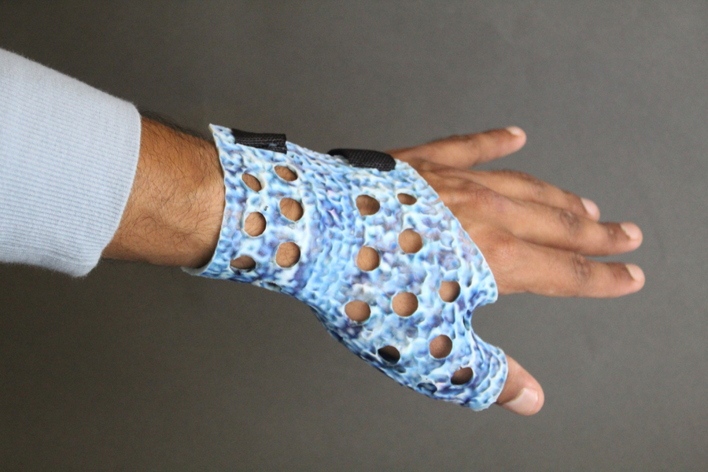

AI-driven tool makes it easy to personalize 3D-printable models
Adam Zewe
As 3D printers have become cheaper and more widely accessible, a rapidly growing community of novice makers are fabricating their own objects. To do this, many of these amateur artisans access free, open-source repositories of user-generated 3D models that they download and fabricate on their 3D printer. But adding custom design elements to these models poses a steep challenge for many makers, since it requires the use of complex and expensive computer-aided design (CAD) software, and is especially difficult if the original representation of the model is not available online. Plus, even if a user is able to add personalized elements to an object, ensuring those customizations don’t hurt the object’s functionality requires an additional level of domain expertise that many novice makers lack.
To help makers overcome these challenges, MIT researchers developed a generative-AI-driven tool that enables the user to add custom design elements to 3D models without compromising the functionality of the fabricated objects. A designer could utilize this tool, called Style2Fab, to personalize 3D models of objects using only natural language prompts to describe their desired design. The user could then fabricate the objects with a 3D printer. “For someone with less experience, the essential problem they faced has been: Now that they have downloaded a model, as soon as they want to make any changes to it, they are at a loss and don’t know what to do. Style2Fab would make it very easy to stylize and print a 3D model, but also experiment and learn while doing it,” says Faraz Faruqi, a computer science graduate student and lead author of a paper introducing Style2Fab. Style2Fab is driven by deep-learning algorithms that automatically partition the model into aesthetic and functional segments, streamlining the design process. In addition to empowering novice designers and making 3D printing more accessible, Style2Fab could also be utilized in the emerging area of medical making. Research has shown that considering both the aesthetic and functional features of an assistive device increases the likelihood a patient will use it, but clinicians and patients may not have the expertise to personalize 3D-printable models. With Style2Fab, a user could customize the appearance of a thumb splint so it blends in with her clothing without altering the functionality of the medical device, for instance. Providing a user-friendly tool for the growing area of DIY assistive technology was a major motivation for this work, adds Faruqi. He wrote the paper with his advisor, co-senior author Stefanie Mueller, an associate professor in the MIT departments of Electrical Engineering and Computer Science and Mechanical Engineering, and a member of the Computer Science and Artificial Intelligence Laboratory (CSAIL) who leads the HCI Engineering Group; co-senior author Megan Hofmann, assistant professor at the Khoury College of Computer Sciences at Northeastern University; as well as other members and former members of the group. The research will be presented at the ACM Symposium on User Interface Software and Technology.
Focusing on functionality
Online repositories, such as Thingiverse, allow inmainiduals to upload user-created, open-source digital design files of objects that others can download and fabricate with a 3D printer. Faruqi and his collaborators began this project by studying the objects available in these huge repositories to better understand the functionalities that exist within various 3D models. This would give them a better idea of how to use AI to segment models into functional and aesthetic components, he says. “We quickly saw that the purpose of a 3D model is very context dependent, like a vase that could be sitting flat on a table or hung from the ceiling with string. So it can’t just be an AI that decides which part of the object is functional. We need a human in the loop,” he says. Drawing on that assessment, they defined two functionalities: external functionality, which involves parts of the model that interact with the outside world, and internal functionality, which involves parts of the model that need to mesh together after fabrication. A stylization tool would need to preserve the geometry of externally and internally functional segments while enabling customization of nonfunctional, aesthetic segments. But to do this, Style2Fab has to figure out which parts of a 3D model are functional. Using machine learning, the system analyzes the model’s topology to track the frequency of changes in geometry, such as curves or angles where two planes connect. Based on this, it mainides the model into a certain number of segments. Then, Style2Fab compares those segments to a dataset the researchers created which contains 294 models of 3D objects, with the segments of each model annotated with functional or aesthetic labels. If a segment closely matches one of those pieces, it is marked functional. “But it is a really hard problem to classify segments just based on geometry, due to the huge variations in models that have been shared. So these segments are an initial set of recommendations that are shown to the user, who can very easily change the classification of any segment to aesthetic or functional,” he explains.
Human in the loop
Once the user accepts the segmentation, they enter a natural language prompt describing their desired design elements, such as “a rough, multicolor Chinoiserie planter” or a phone case “in the style of Moroccan art.” An AI system, known as Text2Mesh, then tries to figure out what a 3D model would look like that meets the user’s criteria. It manipulates the aesthetic segments of the model in Style2Fab, adding texture and color or adjusting shape, to make it look as similar as possible. But the functional segments are off-limits. The researchers wrapped all these elements into the back-end of a user interface that automatically segments and then stylizes a model based on a few clicks and inputs from the user. They conducted a study with makers who had a wide variety of experience levels with 3D modeling and found that Style2Fab was useful in different ways based on a maker’s expertise. Novice users were able to understand and use the interface to stylize designs, but it also provided a fertile ground for experimentation with a low barrier to entry. For experienced users, Style2Fab helped quicken their workflows. Also, using some of its advanced options gave them more fine-grained control over stylizations. Moving forward, Faruqi and his collaborators want to extend Style2Fab so the system offers fine-grained control over physical properties as well as geometry. For instance, altering the shape of an object may change how much force it can bear, which could cause it to fail when fabricated. In addition, they want to enhance Style2Fab so a user could generate their own custom 3D models from scratch within the system. The researchers are also collaborating with Google on a follow-up project. This research was supported by the MIT-Google Program for Computing Innovation and used facilities provided by the MIT Center for Bits and Atoms.
Link to original article Go back to homepage